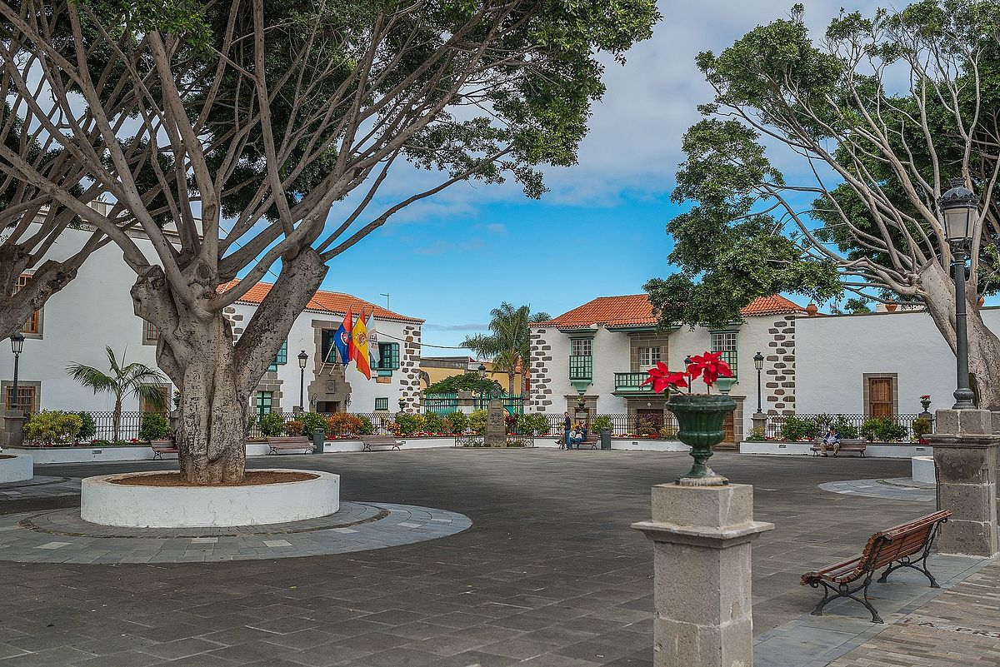
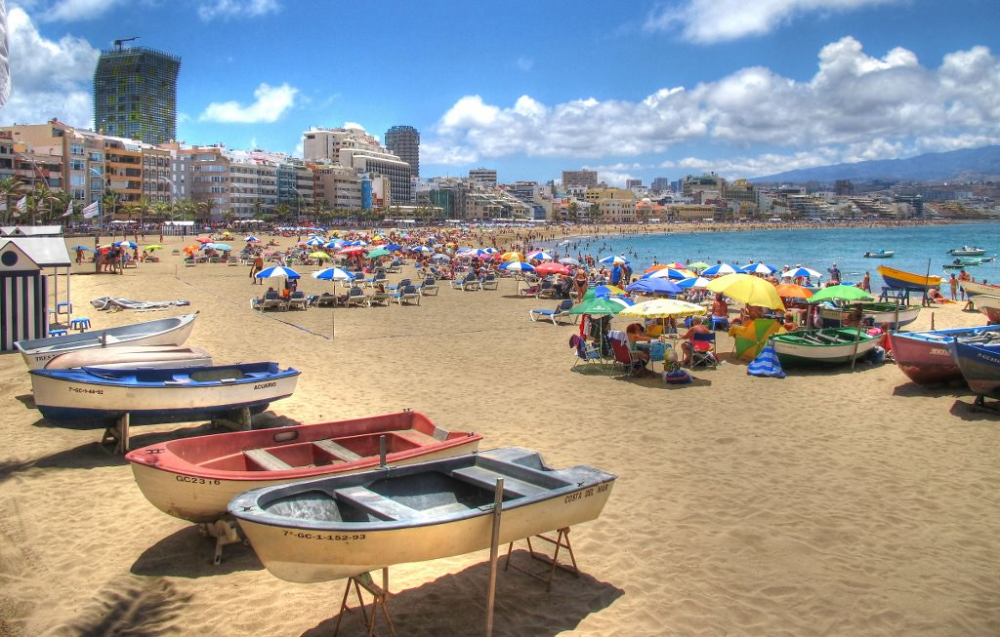

Your quests
The old town
Arucas (Spain)
100%

My dear homeland
Telde (Spain)
10%

Cosmopolitan city
Las Palmas (Spain)
0%
Finger of God
Agaete (Spain)
0%
El Roque Nublo
Tejeda (Spain)
0%
The jewels of the virgin
Teror (Spain)
0%
Quests from local database
{{ quest.id }}
{{ quest.nombre }}
0%
Data from online JSON

{{ usuario.name.first }}
{{ usuario.email }}
Data from Firebase

{{ quest.title }}
{{ quest.description }}